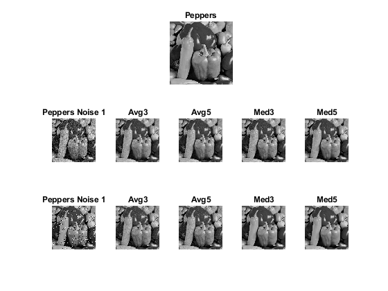
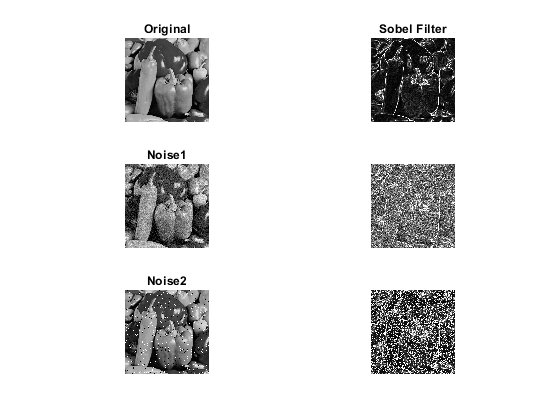

Contents
close all; clear all; clc;
format compact;
Part 1 Average and Med Filter
figure(1)
peppers = imread('peppers.tif');
subplot(3,5,1:5);
imshow(peppers);
title('Peppers');
subplot(3,5,6);
peppersnoise1 = imread('peppersNoise1.tiff');
imshow(peppersnoise1);
title('Peppers Noise 1');
subplot(3,5,7);
avgMask3= ones(3)/9;
peppers1Avg3= filter2(avgMask3,peppersnoise1);
imshow(uint8(peppers1Avg3))
title('Avg3');
subplot(3,5,8);
avgMask5= ones(5)/25;
peppers1Avg5= filter2(avgMask3,peppersnoise1);
imshow(uint8(peppers1Avg5))
title('Avg5');
subplot(3,5,9);
peppers1Med3= medfilt2(peppersnoise1,[3 3]);
imshow(peppers1Med3)
title('Med3')
subplot(3,5,10);
peppers1Med5= medfilt2(peppersnoise1,[5 5]);
imshow(peppers1Med5)
title('Med5')
subplot(3,5,11);
peppersnoise2 = imread('peppersNoise2.tiff');
imshow(peppersnoise2);
title('Peppers Noise 1');
subplot(3,5,12);
avgMask3= ones(3)/9;
peppers2Avg3= filter2(avgMask3,peppersnoise2);
imshow(uint8(peppers2Avg3))
title('Avg3');
subplot(3,5,13);
avgMask5= ones(5)/25;
peppers2Avg5= filter2(avgMask3,peppersnoise2);
imshow(uint8(peppers2Avg5))
title('Avg5');
subplot(3,5,14);
peppers2Med3= medfilt2(peppersnoise2,[3 3]);
imshow(peppers2Med3)
title('Med3')
subplot(3,5,15);
peppers2Med5= medfilt2(peppersnoise2,[5 5]);
imshow(peppers2Med5)
title('Med5')

Sobel Filter
SobelX = [ -1 0 1
-2 0 2
-1 0 1 ];
SobelY = SobelX';
figure(2)
peppers = imread('peppers.tif');
subplot(3,2,1)
imshow(peppers)
title('Original');
subplot(3,2,2)
Gx= filter2(SobelX,peppers);
Gy= filter2(SobelY,peppers);
gradMag= (Gx.^2 + Gy.^2).^.5;
imshow(uint8(gradMag))
title('Sobel Filter')
peppersnoise1 = imread('peppersNoise1.tiff');
subplot(3,2,3)
imshow(peppersnoise1)
title('Noise1')
subplot(3,2,4)
Gx1= filter2(SobelX,peppersnoise1);
Gy1= filter2(SobelY,peppersnoise1);
gradMag1= (Gx1.^2 + Gy1.^2).^.5;
imshow(uint8(gradMag1))
subplot(3,2,5)
peppersnoise2 = imread('peppersNoise2.tiff');
imshow(peppersnoise2)
title('Noise2')
subplot(3,2,6)
Gx2= filter2(SobelX,peppersnoise2);
Gy2= filter2(SobelY,peppersnoise2);
gradMag2= (Gx2.^2 + Gy2.^2).^.5;
imshow(uint8(gradMag2))
